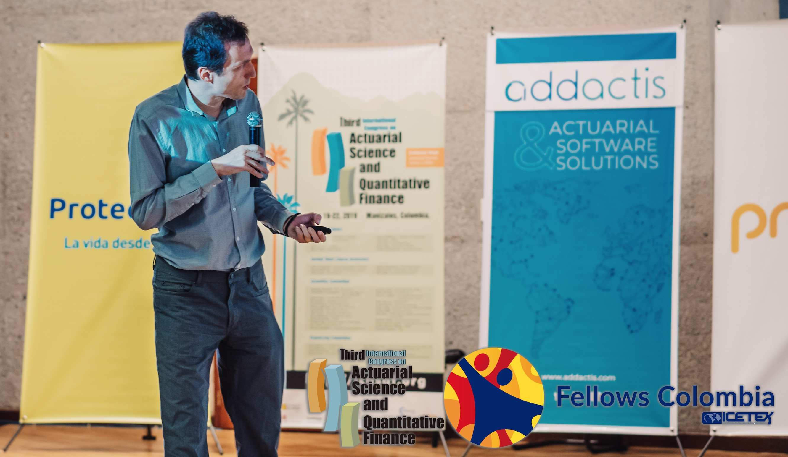
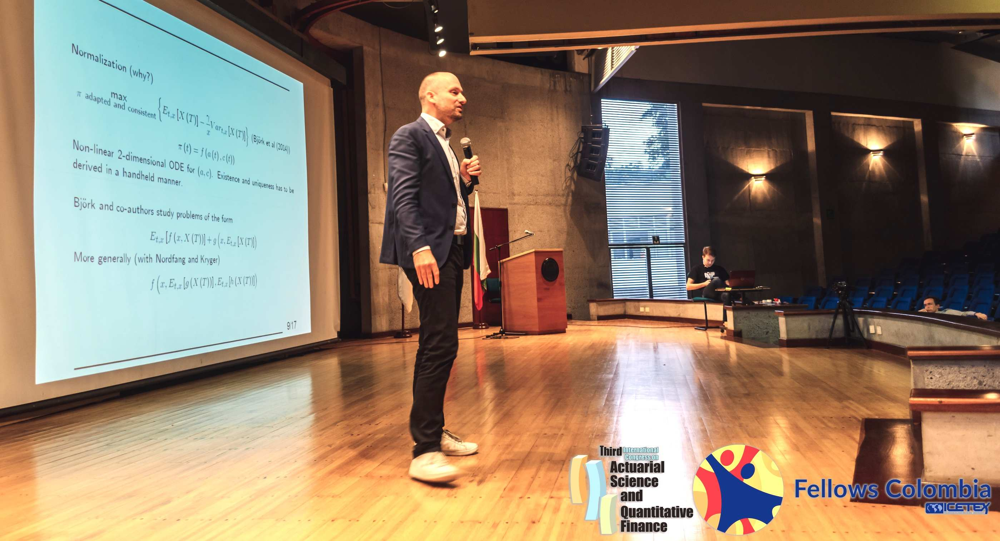
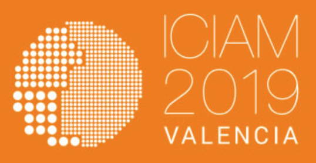

Jaime Alberto Londoño Londoño
Universidad Nacional de Colombia - Campus La Nubia
The third edition of the International Congress on Actuarial Science and Quantitative Finance, ICASQF2019, took place in Manizales, Colombia, on June 19-22, 2019. This event was organized by Sociedad Latinoamericana de Ciencias Actuariales y Finanzas Cuantitativas (SOLACFIN), Universidad Nacional de Colombia, Universidad EAFIT, Universidad del Rosario, Universidad Externado de Colombia, Universidad de Los Andes, and Asociación Colombiana de Actuarios (ACA) and sponsored by ADDACTIS Latina, Proteccion, Precia, and ICETEX. This third edition consolidated this biennial series of events as the referent in Actuarial Science and Quantitative Finance in Colombia, the Andean Region (Peru, Colombia, Venezuela, Ecuador, and Bolivia) and the Caribbean Region with researchers from different parts of the world. This meeting is becoming the place to enhance relations between academic and industrial communities from Colombia and the Andean Region with the communities from North America and the rest of the world. It is also an objective of ICASQF to help as the meeting point for researchers and students to stimulate the growing interest in Actuarial Science and Quantitative Finance in Colombia, the Andean region, and the Caribbean.
Finance and actuarial science were the main topics of the congress. We took advantage of the opportunity for debates in these areas and related issues such as teaching, research, technical regulation and business practice in Andean and Caribbean regions, and its interrelation with the rest of the world.
The Congress covered a variety of topics in Actuarial Science and Quantitative Finance, such as statistics and data mining techniques in Finance and Actuarial Science, numerical techniques in Finance, Portfolio Management, Derivative Valuation, Risk theory, Financial Mathematics and Life and Pension Insurance Mathematics, Non-Life Insurance Mathematics, and Economics of Insurance among others.
We are particularly proud to have with us recognized leaders in the areas of Actuarial Science and Finance. Invited speakers included Torben Andersen (Northwestern University), Soren Asmussen (Aarhus University), Jacksa Cvitanic (Caltech), Bruno Dupire (Bloomberg LP), Morgens Steffensen (University of Copenhagen), Greg Taylor (University of New South Wales), Nizar Touzi (École Polytechnique), and Ruodu Wang (University of Waterloo).
Besides the plenary talks given by invited speakers, we included three short courses in Actuarial Science taught by Emiliano Valdez (University of Connecticut), Mauricio Villegas (UNSW) and Edward Jed Frees (University of Wisconsin-Madison). We also included three short courses in Finance prepared by Julien Guyon (Bloomberg, LP.), Mathieu Rosenbaum (Ecole Polytechnique) and Viktor Todorov (Northwestern University) and a contributed course by Javier Sandoval (Universidad Externado de Colombia). In addition, ICASQF included 39 oral invited oral contributions, 32 contributed oral talks, and 13 poster presentations. Authors come from different corners of the world, and countries of origin include Australia, Austria, Brazil, Canada, China, Chile, Colombia, Denmark, France, Greece, Germany, India, Italy, Mexico, Peru, UK, USA, Spain, and Switzerland. We received 78 contributions and 40 invited contributions. The selection process was the result of careful deliberations, and 35 oral contributed presentations and 20 posters were accepted.
 (a) Viktor Todorov. Northwestern University. Invited Short Course.

(b) Mogens Steffensen. University of Copenhagen. Invited Talk.
We have made an effort, including talks and courses with a point of view of practitioners. The impact of practitioners is becoming more relevant in each new edition of ICASQF. We hope that ICASQF would be a reference point to discuss problems that arise in the financial and insurance industry in Latin America with an academic perspective.
In addition, we had an enjoyable social program that included visits to Manizales and surrounding areas, that showed the natural beauty of the Coffee Cultural Landscape of Colombia.
The congress was also an opportunity to promote SOLACFIN (Latin American Society for Actuarial Science and Quantitative Finance) and to encourage assistants to join our efforts for the development of the society.
Finally, as a result of the success of the third ICASQF was decided to continue this series of events, and to organize the next edition in June 2021 in Colombia.
| Jaime A. Londoño |
| Chair Scientific Committee |
| ICASQF 2019 |
|

|
Evento satélite de:
ICIAM 2019 - Valencia International Congress on Industrial and Applied Mathematics |